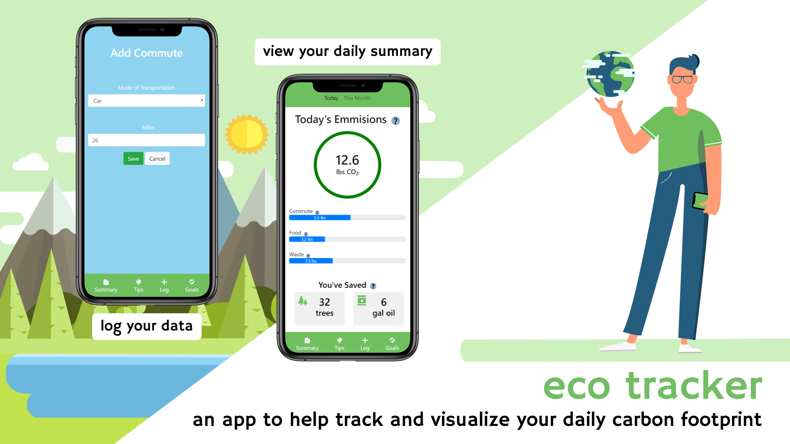

Eco-Tracker App.
Skills: Prototyping | Node.js | HTML/CSS/JavaScript

eco-tracker is a project from COGS 120 - Interactive Design - taught by Scott Klemmer. I collaborated with Tatum Maston, Brendan Jew, and Aaron Truong to form the Eco-tracker team!
When making the change to an eco-friendly lifestyle, it is hard to see the difference you are making. We solved this problem by visualizing data logged into the app, motivating the user to continue by quantifying their positive impact on the environment. This project is unique because it conveniently calculates your emissions based off of your data and allows you to see your progress over time as you change your lifestyle habits.
Storyboards and Needfinding

After interviewing students to find out what matters to them, my team and I created storyboards to determine the user's motivation for using our app as well as the current problems that we wanted to help mediate. Our main demographic was college students who may or may not know about their carbon footprint. We wanted to find a way to let people understand how their actions can affect the environment and encourage people to adopt eco-friendly habits.
Prototypes

Our paper prototype outlined key user interactions, such as tracking daily input from commute to waste. The user would create a goal and log data, which would be converted to a daily emmision score that they could share with friends and family.

The digital wireframes included minimal styling that did not stray too far from our paper prototype. My team and I did remove the option to log energy because we learned from user testing that people would not track their energy usage daily. Furthermore, we had difficulty determining how the emission score for energy would be calculated, so we omitted it from our wireframe.
Refining the Prototype and User Testing!
For our final prototype, we continued to make changes to the app's interface and functionality based on user testing. Our results from our Google Analytics A/B test indicated that people preferred an input box as opposed to a slider for the log commute page. Another key change that we made was to include more help and documentation to help first users understand how our app works.
Final Presentation

The eco-tracker app gives people a way to track their daily commute, food, and waste data to make progress towards personal goals and motivate themselves to reduce their carbon footprint.
Post-Mortem
From this ten-week process, I learned how fun failure and brainstorming can be when I am accompanied by a team of equally-motivated students who are willing to help me when I do not know what to do. No one on my team was designated to be "the coder" or "the project manager," so everyone did their best to help where and when they can. As a result, everyone could help with all aspects of the project in some way! If we were to redo this process, I would try to gradually work on the project as opposed to reserving one day to do all of my work.